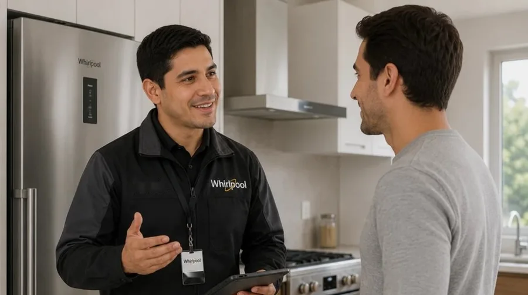
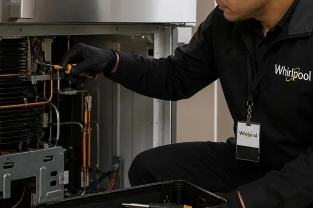
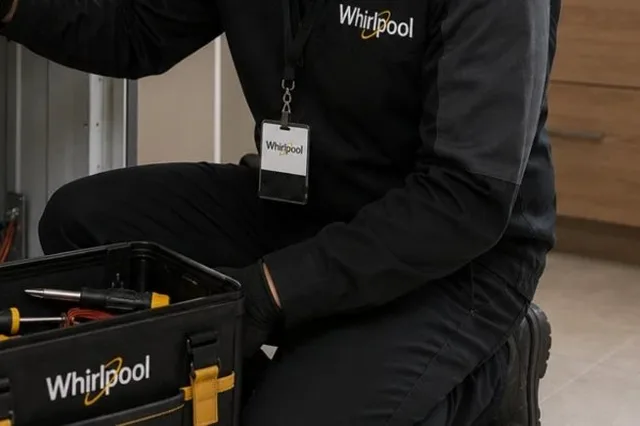
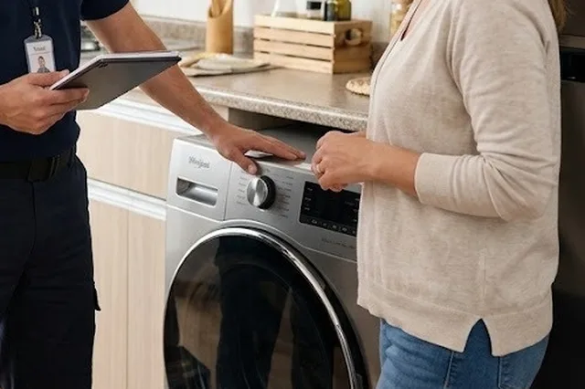
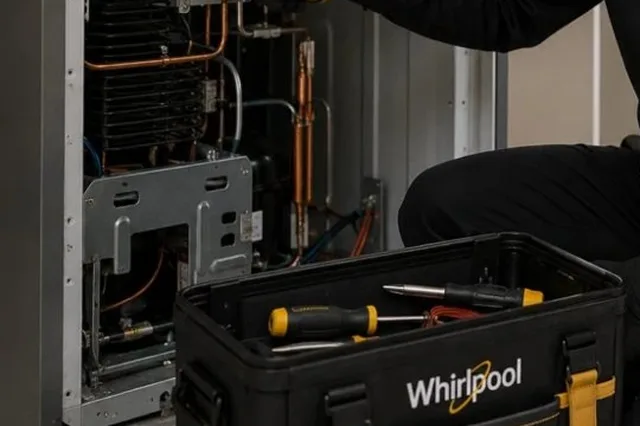
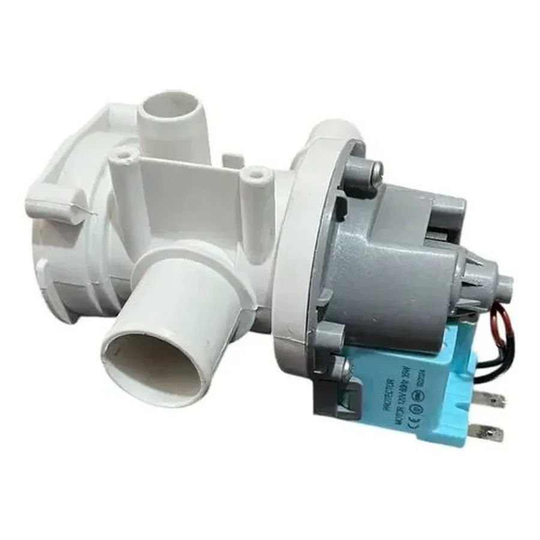
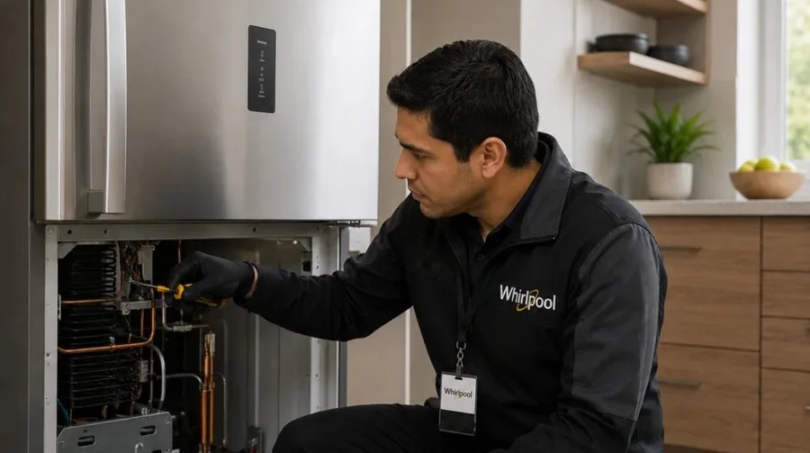
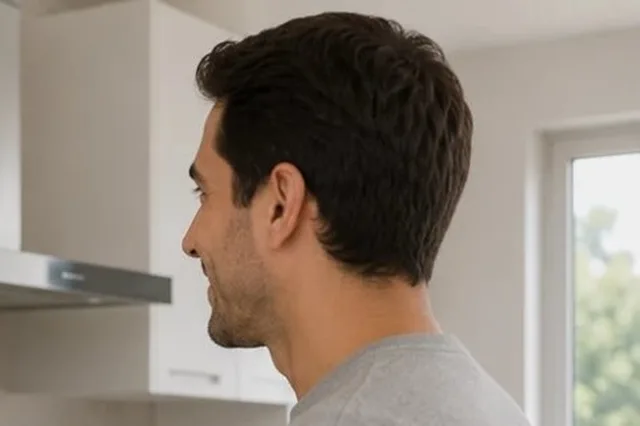

Reparación de electrodomésticos a domicilio
Servicio técnico Whirlpool Quito
Reparación de electrodomésticos Whirlpool en Quito: refrigeradoras, neveras, lavadoras, secadoras, cocinas y hornos, en tu casa. Servicio técnico y centro de servicio Whirlpool a domicilio, con costo antes de reparar.
- A domicilio en Quito
- Norte, centro, sur y valles
- Te explicamos la falla antes de reparar

Nuestros servicios
Todo lo que hacemos por tus electrodomésticos Whirlpool en Quito.

Reparación a domicilioReparamos a domicilio los electrodomésticos Whirlpool más comunes del hogar en Quito: refrigeradoras, nev…Ver servicio →
Mantenimiento preventivoUn mantenimiento a tiempo cuesta menos que una reparación grande. Revisamos limpieza, conexiones, filtros…Ver servicio →
InstalaciónUna instalación correcta evita fugas, vibración, mal funcionamiento y riesgos con el agua o la electricid…Ver servicio →
DiagnósticoNo siempre se sabe qué falla de un equipo. El diagnóstico identifica la causa, te explica si es reparable…Ver servicio →Tarjetas electrónicasMuchas fallas actuales vienen de la tarjeta de control: el equipo no enciende, se reinicia, muestra códig…Ver servicio →
RepuestosSi tu equipo necesita una pieza, primero hay que confirmar cuál es. Te ayudamos a identificar el repuesto…Ver servicio →Electrodomésticos que reparamos
Elige tu equipo: cada uno tiene sus fallas, servicios y zonas.

Reparación de refrigeradoras Whirlpool en Quito
Reparamos refrigeradoras (neveras) Whirlpool a domicilio en Quito: de congelador superior, Side by Side, …
Fallas más consultadas- Refrigeradora Whirlpool: no enfría
- Refrigeradora Whirlpool: el congelador se llena de escarcha
- Refrigeradora Whirlpool: gotea agua dentro de la nevera

Reparación de neveras Whirlpool en Quito
Reparamos neveras Whirlpool a domicilio en Quito: de congelador superior, Side by Side, French Door, con …
Fallas más consultadas- Refrigeradora Whirlpool: no enfría
- Refrigeradora Whirlpool: el congelador se llena de escarcha
- Refrigeradora Whirlpool: gotea agua dentro de la nevera

Reparación de lavadoras Whirlpool en Quito
Reparamos lavadoras Whirlpool de carga superior y de carga frontal a domicilio en Quito: no centrifugan, …
Fallas más consultadas- Lavadora Whirlpool: no centrifuga
- Lavadora Whirlpool: no desagua (queda agua en la tina)
- Lavadora Whirlpool: no llena de agua

Reparación de secadoras Whirlpool en Quito
Reparamos secadoras Whirlpool eléctricas a domicilio en Quito: no secan, no calientan, hacen ruido, tarda…
Fallas más consultadas- Secadora Whirlpool: no seca o la ropa sale húmeda
- Secadora Whirlpool: no calienta
- Secadora Whirlpool: tarda demasiado en secar

Reparación de cocinas Whirlpool en Quito
Reparamos cocinas Whirlpool a gas en Quito: hornillas que no encienden, llama amarilla o débil, perillas …
Fallas más consultadas- Cocina Whirlpool: una hornilla no enciende
- Cocina Whirlpool: la llama sale amarilla
- Cocina Whirlpool: huele a gas

Reparación de hornos Whirlpool en Quito
Reparamos hornos Whirlpool empotrables, eléctricos y a gas en Quito: no calientan, calientan de más o de …
Fallas más consultadas- Horno Whirlpool: no calienta
- Horno Whirlpool: calienta de más o quema
- Horno Whirlpool: calienta de menos o tarda mucho
¿Buscas un centro de servicio Whirlpool en Quito?
Con nosotros no llevas el equipo: el técnico va a tu casa.
Cobertura: barrios de Quito
Atendemos el norte, el centro, el sur y los valles. Elige tu barrio.

Cómo trabajamos
Vamos hasta donde está tu equipo, lo revisamos y te explicamos antes de reparar.

Imágenes ilustrativas.

1Escríbenos
Por WhatsApp o llamada al 099 350 8191. Cuéntanos qué equipo es, la marca, el modelo y la falla.
- 2
Diagnóstico en tu casa
Probamos el equipo, identificamos la causa y te explicamos qué tiene.
- 3
Costo antes de reparar
Te informamos el costo y tú decides si continuamos.
- 4
Reparación y prueba
Reparamos y probamos que el equipo quede funcionando.
Guías
Voltaje, limpieza y fallas explicadas para Quito.
Servicio técnico Whirlpool en Quito: reparación a domicilio
Servicio Técnico Whirlpool Quito reúne la reparación, el mantenimiento y la instalación de electrodomésticos Whirlpool en Quito: refrigeradoras, neveras, lavadoras y secadoras, cocinas y hornos. Si buscas un centro de servicio Whirlpool en Quito, aquí es distinto: el técnico va a tu casa, revisa el equipo en su lugar, te explica la falla y te da el costo antes de reparar.
Las consultas más frecuentes son la refrigeradora que no enfría, el congelador con escarcha, la lavadora que no desagua, la lavadora que no centrifuga y la secadora que no seca. Cada falla tiene su propia página con causas probables, qué revisar antes de llamar y cuándo conviene pedir al técnico.
Atendemos 67 barrios y sectores del norte, el centro, el sur y los valles de Quito, como La Carolina, Cumbayá, Quitumbe, Solanda o el Valle de los Chillos. Para pedir el servicio, escribe por WhatsApp o llama al 099 350 8191 con el modelo del equipo, la falla y tu barrio; también puedes ver cómo agendar la visita o cómo cotizar una reparación.
Preguntas frecuentes
¿Hacen servicio técnico Whirlpool a domicilio en Quito?
Sí. Vamos a tu casa, apartamento u oficina en Quito: norte, centro, sur y valles. Escríbenos por WhatsApp con el equipo, el modelo y la falla.
¿Qué electrodomésticos Whirlpool reparan?
Refrigeradoras, neveras, lavadoras, secadoras, cocinas y hornos.
¿Qué hago si mi equipo está en garantía?
Revisa primero las condiciones de la garantía de fábrica. Si ya venció o necesitas un diagnóstico, escríbenos por WhatsApp.
¿Cuánto cuesta la visita?
Escríbenos al WhatsApp con el equipo, el modelo y la falla; te confirmamos el costo de la visita antes de ir.
¿Dan el costo antes de reparar?
Sí. Primero diagnosticamos, te explicamos la falla y te informamos el costo antes de continuar.
¿Cómo pido el servicio?
Por WhatsApp o llamada al 099 350 8191 (+593 99 350 8191). Envía marca, modelo, falla, tu barrio y, si puedes, una foto de la etiqueta y un video corto.
¿Nevera o refrigeradora Whirlpool: cuál es la diferencia?
Ninguna: son nombres del mismo electrodoméstico. En Quito se usa más refrigeradora, pero reparamos ambas igual y a domicilio.
¿Son un centro de servicio Whirlpool en Quito?
Somos un servicio técnico a domicilio para electrodomésticos Whirlpool en Quito: en vez de llevar el equipo a un centro, el técnico va a tu casa. Para condiciones de garantía de fábrica, consulta directamente con el fabricante.
¿Cuánto cuesta la reparación?
Depende de la falla y de la pieza. Después del diagnóstico te damos el costo antes de reparar y tú decides.
¿Qué necesito para pedir el servicio?
Marca y modelo del equipo, la falla que presenta, tu barrio y, si puedes, una foto de la etiqueta y un video corto.
¿Atienden los valles de Quito?
Sí: Cumbayá, Tumbaco, Valle de los Chillos y otros sectores de los valles. Escríbenos tu barrio y confirmamos.
¿Reparan neveras y refrigeradoras con dispensador de agua y hielo?
Sí: Side by Side, French Door y otros modelos con dispensador, incluyendo cambio de filtro de agua y revisión de la válvula y las mangueras.
¿Tu electrodoméstico está fallando?
Escríbenos por WhatsApp con la marca, el modelo y la falla. Te orientamos y coordinamos la visita.
Escribir por WhatsApp Llamar 099 350 8191